Issues for Training:
- Poor conditioning (High condition number) is an issue for optimisation (Appendix 1)
- Saddle Points
- Local Minima
Tldr, use RMSProp or Adam.
SGD + Momentum
Maintain a velocity as a running (exponential) mean of gradients
Step in the direction of the velocity, instead of just the gradient. This smooths out the direction of updates.
vt+1=ρvt+∇f(xt)xt+1=xt−αvt+1
while True:
dx = compute_gradient(x)
vx = rho * vx + dx
x += learning_rate * vx
Note: Rho gives “friction”, typically, 0.9 or 0.99.
Helps with Local Minima, Saddle Points and also Poor Conditioning. (Appendix 2)
Momentum tends to overshoot the optimum.
SGD + Nesterov Momentum
You start at your point, you step in the direction of where the velocity would take you, and then you compute the gradient at that point and make the step.
"If your velocity equation was a little bit wrong, it allows you to incorporate gradient information from some other parts of your objective landscape"
vt+1=ρvt−α∇f(x+ρvt)xt+1=xt+vt+1
Generally, we evaluate Nesterov Momentum using a change of variables x̃ t=xt+ρvt, allowing us to use a form very similar to original momentum.
vt+1x̃ t+1=ρvt−α∇f(x̃ t)=x̃ t−ρvt+(1−ρ)vt+1=x̃ t+vt+1+ρ(vt+1−vt)
while True:
dx = compute_gradient(x)
old_v = v
v = rho * v - learning_rate * dx
x += -rho * old_v + (1 + rho) * v
The interpretation of Nestrov Momentum: We update our point according to our current velocity plus a weighted difference between our current velocity and our previous velocity. This is an error correcting term between the current velocity and the previous velocity.
Nesterov Momentum tends to overshoot the optimum but less than raw momentum. For this reason raw momentum is used less than Nesterov Momentum.
Intuition for Nesterov Momentum in Appendix 3.
AdaGrad (deprecated)
Keeps a running historical sum of sqiares of the gradient in each direction. Adds Element-wise scaling of the gradient based on the historical sum of squares in that direction.
Motivation: Helps with conditioning, dimensions with high gradients get scaled to be smaller (slowed down process along dimensions where the gradient oscillates a lot), dimensions with low gradients get scaled to be larger (speed up process along dimensions progressing too slowly).
However, AdaGrad makes smaller and smaller updates each step, so it is not used that much in favor of RMSProp
grad_squared = 0
while True:
dx = compute_gradient(x)
grad_squared += dx * dx
x -= learning_rate * dx / (np.sqrt(grad_squared) + 1e-7)
RMSProp
Variant of AdaGrad that solves the issue of updates getting smaller and smaller. Simple fix: instead of keeping the full sum of squares of gradients along each dimension, we keep an exponentially moving average.
grad_squared = 0
while True:
dx = compute_gradient(x)
grad_squared = decay_rate * grad_squared + (1 - decay_rate) * dx * dx
x -= learning_rate * dx / (np.sqrt(grad_squared) + 1e-7)
Overshoots much less than SGD-Momentum/Nesterov Momentum
Adam
Uses both momentum (the first moment) and the square gradients (RMSProp) to update the weights.
However, a slight adjustment is needed because updates will be unnecessarily large in the first updates (Appendix 4 for details)
first_moment = 0
second_moment = 0
while True:
dx = compute_gradient(x)
first_moment = beta1 * first_moment + (1 - beta1) * dx
second_moment = beta2 * second_moment + (1 - beta2) * dx * dx
first_unbiased_moment = first_moment / (1 - beta1 ** t)
second_unbiased_moment = second_moment / (1 - beta2 ** t)
x -= learning_rate * first_unbiased_moment / (np.sqrt(second_unbiased_moment) + 1e-7)
Adam is a good default optimization algo with beta1=0.9, beta2=0.999, learning_rate = 1e-3 or 5e-4 is a great starting point for many models!
Ideas:
Step decay learnign rate: e.g. decay learning rate by half every few epochs
Exponentially decayed learning rate: α=α0e−kt
1/t decay: α=α9/(1+kt)
Step decayed learning rates get you loss plots that look like Appendix 5.
However, learning rate decay is less important than the learnign rate itself. First train a good model with a good learning rate itself, then look into possibly doing learnign rate decay by looking at the loss curve.
Second order optimization
Second Order optimization allows us to jump directly to (or close to) the optimum.
Generally it is very slow and infeasible to invert the Hessian for second order optimization (The Hessian is O(N^2) and the inversion is O(N^3)). (Appendix 6 for Equation).
However, some approximate second order optimizations functions, in particular L-BFGS (using low-rank approximations of the Hessian) are sometimes used for neural network training, esp in Style Transfer. (Appendix 6)
L-BFGS usually works very well in full batch, deterministic mode (i.e. if you have a single, deterministic f(x) then L-BFGS will work very nicely). It does not transfer very well to mini-batch setting.
Adapting L-BFGS to large-scale stochastic setting is active research area.
If you can afford to do full batch updates, then try out L-DFGS (and dont forget to disable all sources of noise). Otherwise use Adam.
Model Ensembles
You can ensemble multiple separate models, or use multiple snapshots of a single model during training. Very interestingly, you can use cyclic learning rate schedules that jump around preiodically to fit to differnet parts of the optimal space, and then ensemble the shapshots of the models taken at those different spaces.
Polyak averaging- insated of usign the actual parameter (weights) vector, keep a moving average of the parameter vector and use that at test time. Not used that much in practice.
Regularization
Dropout is the default regularizer for neural networks. Dropout is an implicit type of ensembling.
In each forward pass, randomly set some neurons to zero.
Probability of dropping is a hyperparameter, 0.5 is common. (Appendix 7)
More specifically, what we are setting to zero are the activations (x). Each layer is computing previous activation times weight matrix is your next activation. In each layer, right after computing the activations for that layer, randomly set some of them to zero.
Dropout is more common in fully connected layers, but you sometimes see this in convolutional layers, in whcih case instead of dropping activations randomly sometines you drop entire feature maps (channels) randomly.
During test time, we multiply back the dropout probability, or, as is more commonly seen, we perform dropout and scale the activations during training and we keep test time as is so that test time inference is faster (“inverted dropout, more commonly used). (Appendix 7)
Inverted Dropout (More Common)
p = 0.5
def train_step(X):
H1 = np.maximum(0, np.dot(W1,X) + b1)
U1 = (np.random.rand(*H1.shape) < p) / p #first dropout mask. Note the /p so we don't have to multiply it back later!
H1 *= U1
H2 = np.maximum(0, np.dot(W2, H1) + b2)
U2 = (np.random.rand(*H2.shape) < p) / p #second dropout mask. Note the /p so we don't have to multiply it back later!
H2 *= U2
out = np.dot(W3, H2) + b3
def predict(X):
H1 = np.maximum(0, np.dot(W1, X) + b1 )
H2 = np.maximum(0, np.dot(W2, H1) + b2 )
out = np.dot(W3, H2) + b3
p = 0.5
def train_step(X):
H1 = np.maximum(0, np.dot(W1,X) + b1)
U1 = np.random.rand(*H1.shape) < p #first dropout mask.
H1 *= U1
H2 = np.maximum(0, np.dot(W2, H1) + b2)
U2 = np.random.rand(*H2.shape) < p #second dropout mask.
H2 *= U2
out = np.dot(W3, H2) + b3
def predict(X):
H1 = np.maximum(0, np.dot(W1, X) + b1 ) * p #scale the activations back
H2 = np.maximum(0, np.dot(W2, H1) + b2 ) * p #scale the activations back
out = np.dot(W3, H2) + b3
L2 regularization is not used that often in neural networks. Too many parameters.
Randomness Regularization
Dropout is an example of a general strategy for regularization: During training, add some kind of randomness, and during testing, average out the randomness (sometimes approximate). Batch norm is also an example of this.
Data Augmentation is an example of this. For images (Inversion, random cropping) (Appendix 8)
Other ideas: (Appendix 8)
DropConnect (rather than zeroing the activations, randomly zero the weight vector)
Fractional Max Pooling
Stochastic Depth
Batch Norm
Transfer Learning
First train on ImageNet or using an existing model, then freeze the lower layers, reinitalize the last layer randomly, and only train the last layer.
If you have more data, try to fine-tune more and more of the network.
When fine-tuning, use a small learning rate. 1/10 of original learning rate is a good idea.
Almost always used for projects! Use an existing trained model and fine-tune it! Basic low-level image features are hardly ever trained from scratch. (Appendix 9)
Appendix 1
Poor Conditioning - some dimensions are a lot more ’steep’ than others - this is captured by the condition number of the Hessian - the ratio of the largest to smallest singular value
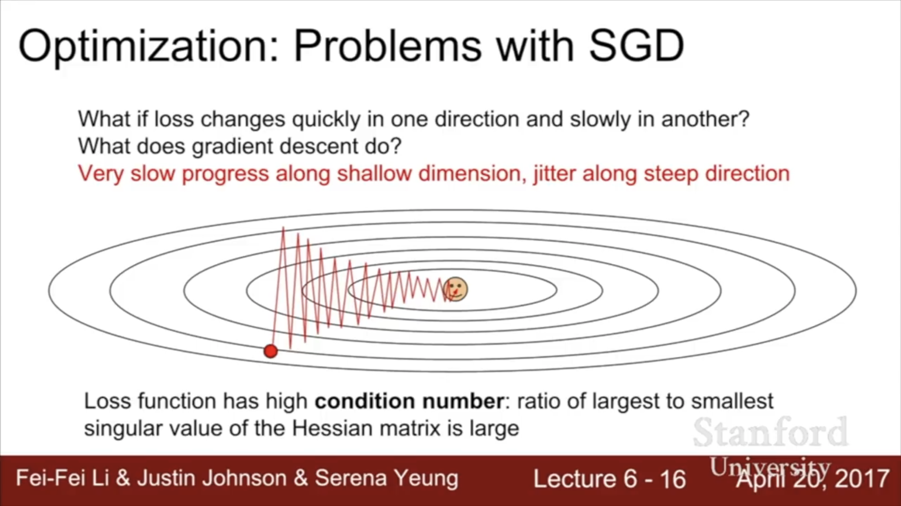
Appendix 2:
How momentum helps with Local Minima, Saddle Points, Poor Conditioning
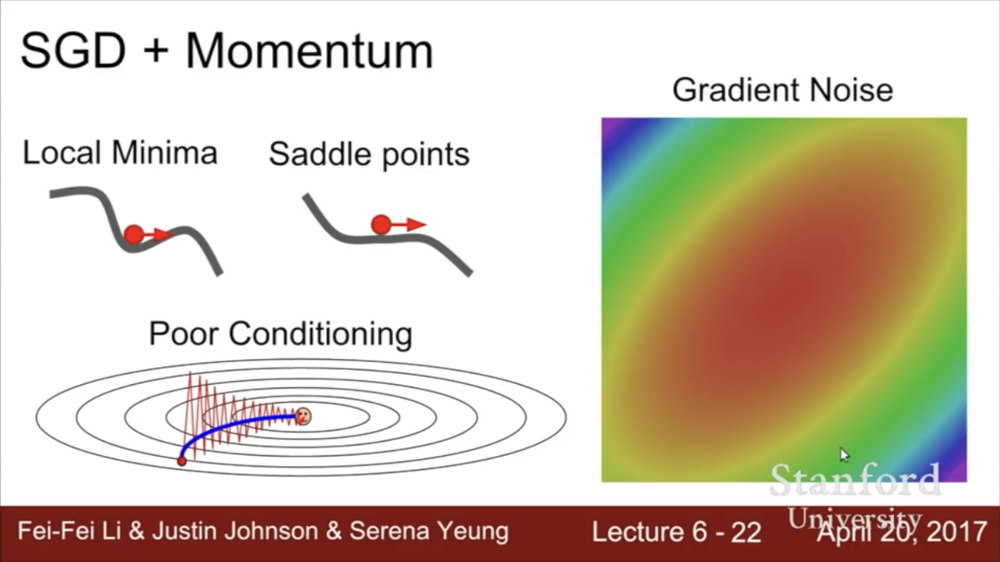
Appendix 3:
Nesterov Momentum
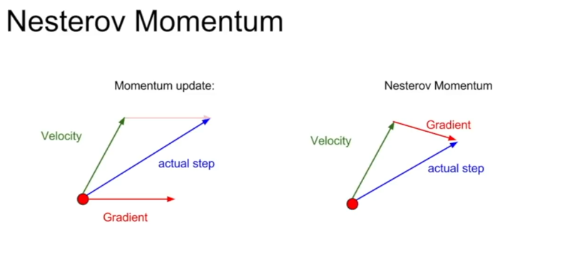
Appendix 4: Adam
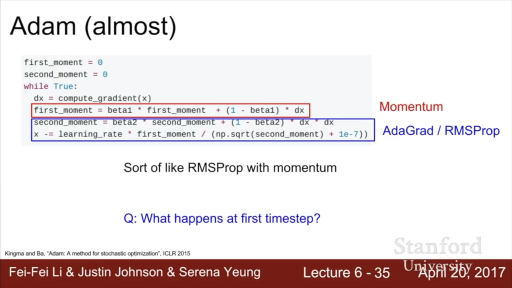
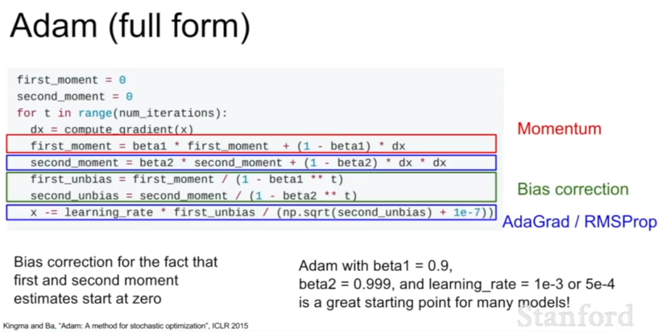
Appendix 5: Learning Rates
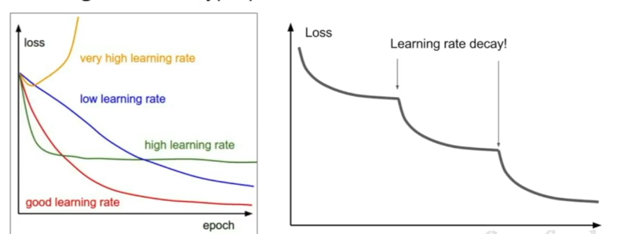
Appendix 6: Second Order and Quasi Second Order Methods
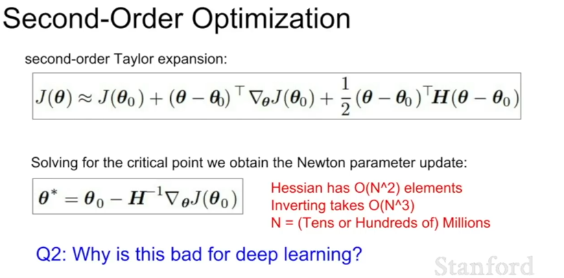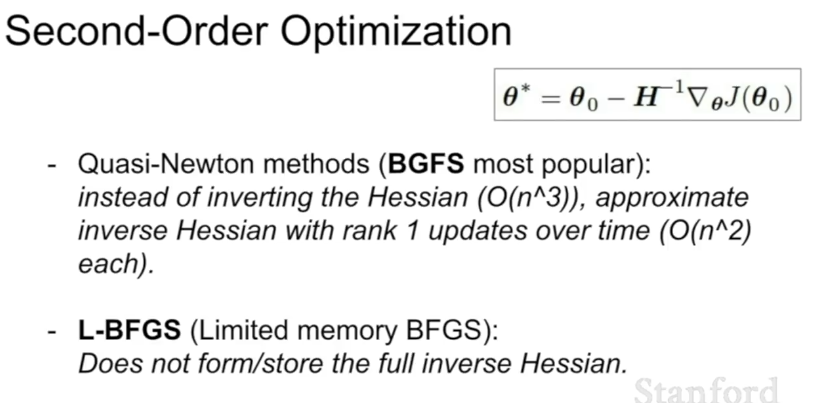
Appendix 7: Dropout
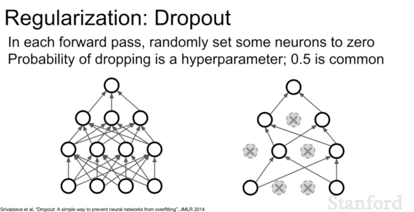
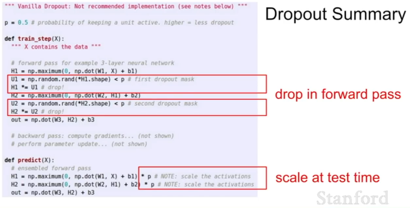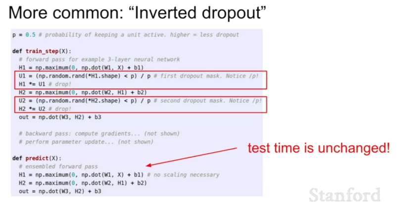
Appendix 8: Data Augmentation
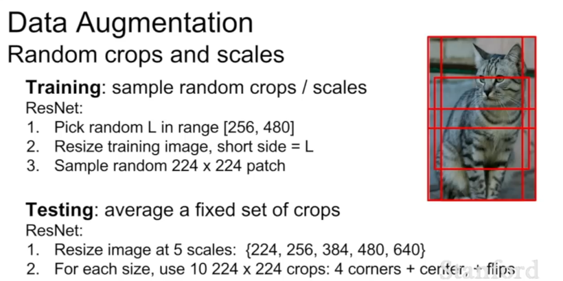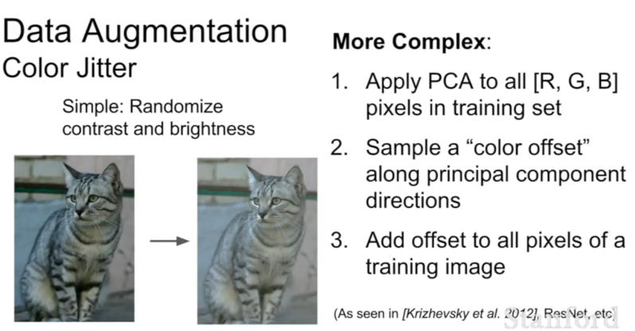
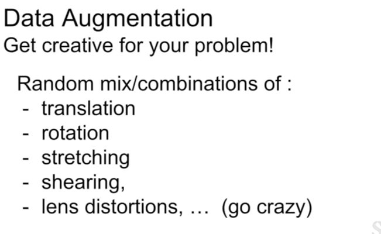
Appendix 8b: Other Randomness Regularization Ideas
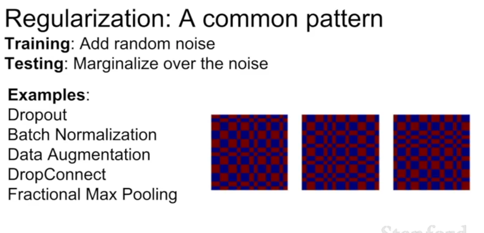
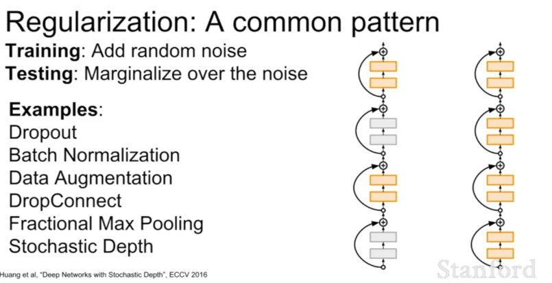
Appendix 9: Transfer Learning